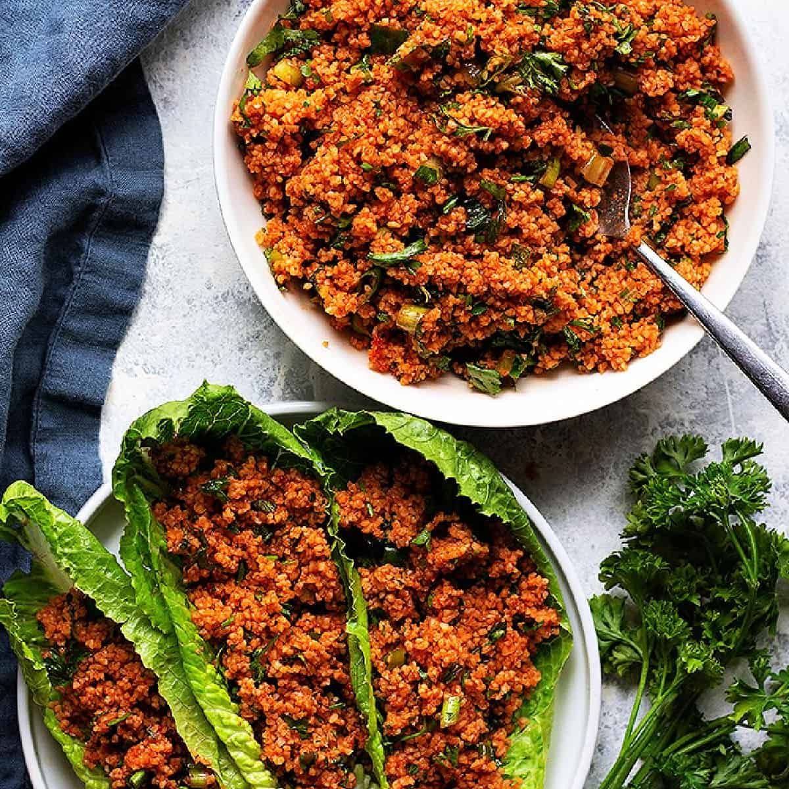

Kısır is a classic Turkish salad made with thin bulgur wheat, tomatoes, mint, garlic, parsley, and either lemon juice or sour pomegranate molasses. Red pepper flakes are often added to the salad to make it spicier. Lemon juice is typically used in northwestern Türkiye, while pomegranate molasses is more commonly used in the southeast of the country.
Meal prep time : 45 minutes
Servings : 6